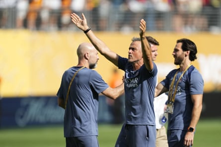

On the afternoon that Paris Saint-Germain reached the final of the Club World Cup , placing them 90 minutes away from winning every trophy available this season, Luis Enrique underlined how far they had come by recalling: “In January, people said we didn’t have leaders and didn’t score goals.” Since then they have scored more than 100 and won their first ever Champions league with a 5-0 victory against Inter in the final . Here they put four past Real Madrid with a display so dominant that he had to deny that they had taken their foot off the gas.
In doing so, however, the PSG head coach did reveal that he had made changes with Sunday’s final against Chelsea in mind. PSG were two goals up inside 10 minutes and had made it 3-0 before they had played half an hour, the game effectively over, before Gonçalo Ramos added a fourth in the dying minutes .
The second half had been played out at a reduced pace and PSG made a series of substitutions involving key players with Khvicha Kvaratskhelia, Fabián Ruiz, Nuno Mendes, Ousmane Dembélé and Désiré Doué all removed. At times it felt like the only thing that prevented them from scoring more was that they did not need to and there was no desire to keep tearing into their opponents.
“My phone is full of messages from Barcelona fans, which tells you about how big this game was,” Luis Enrique said. “You go at 100% for everything this shirt represents and we know what Real Madrid are, what they were and what they will always be, how great they are. We didn’t put the brakes on but of course with the heat, with the final in three days’ time, with cramp and the risk of tiredness, you act. The first thing is the objective, which is to reach the final and compete. But at no point do you put the brakes on.”
Luis Enrique soaks up the acclaim after the match.Photograph: Anadolu/Getty Images
“This was an objective from the start,” the PSG head coach added. “And now we are just one game away from building PSG’s history, and winning all the trophies we have participated in this season. It means a lot for us, for our fans and it is a pleasure to work at this club. We have scored 100-plus goals and we let in very few. These players are exceptional.” Asked for the key, Luis Enrique said: “The insuperable play of my players and their generosity, the way they give everything at the service of the team.”
Xabi Alonso insisted the defeat “hurt” but that he had learnt a lot over the six games he has been in charge of Real Madrid at this Club World Cup . “I leave here with lots of certainties, and next year will be different,” he said. “There are positive things and we leave here as a better team even if it is difficult to say that right now. This game and this competition has told me lots of things about what we are, what we need to improve, the changes there will be. These were the last game of 2024-25, not the first games of 2025-26.”